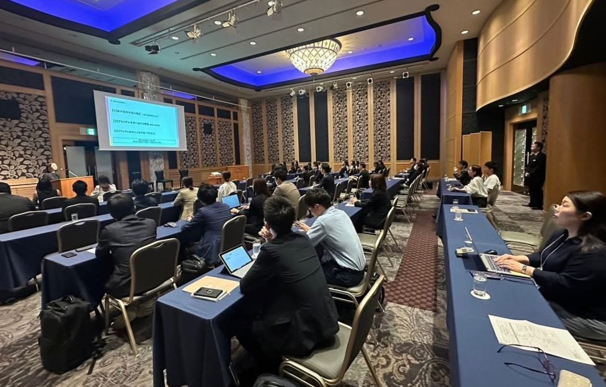
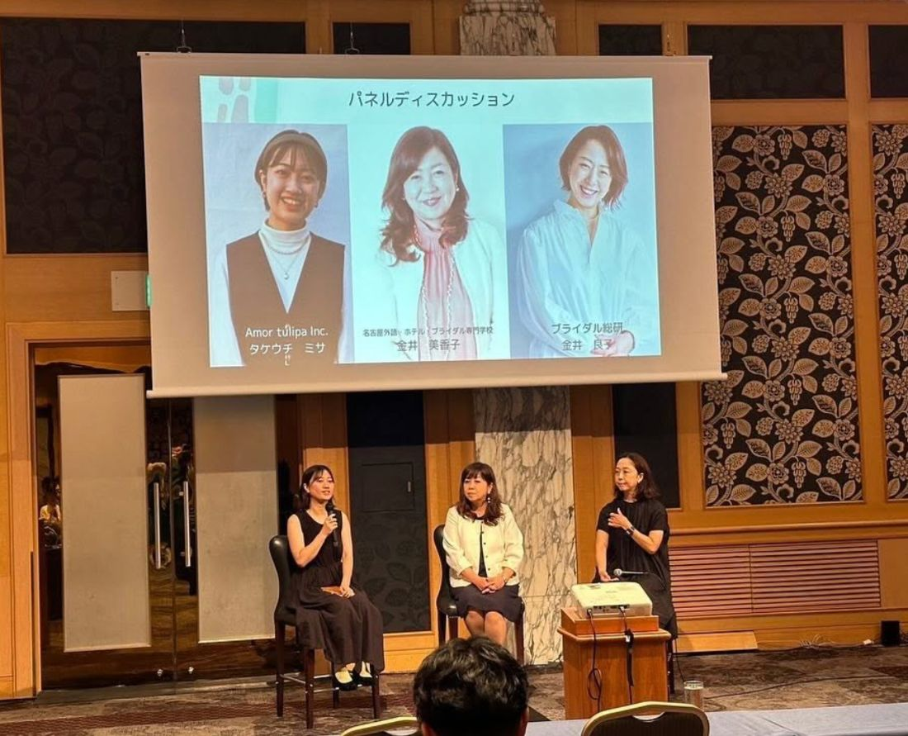

2024年7月22日、愛知ウェディング協議会 リアルカンファレンスを、ANAクラウンプラザホテルグランコート名古屋にて開催いたしました。


第1部では、リクルート ブライダル総研の金井さんをお招きしました。新卒採用のトレンドから、ブライダル業界の採用における課題について、お話しいただきました。
その後、金井さんをはじめ、愛知ウェディング協議会にも深く関わってくださっているお二人にもご参加いただき、パネルディスカッションを行いました。
株式会社リクルート／リクルート ブライダル総研 研究員
愛知ウェディング協議会 カレッジ部会 部会長／学校法人 電波学園 名古屋外語・ホテル・ブライダル専門学校 ブライダル科 責任者
愛知ウェディング協議会 次世代推進部 部長／株式会社Amor tulipa Inc. 代表取締役
金井さんのお話、そしてパネルディスカッションを通して、Z世代のリアルな思いや、企業側として考えていくべきことを、いろんな角度から知る機会となりました。
採用する側の視点、学生を育てる学校の視点、そして次世代を推進する立場の視点。それぞれ違う場所からこのテーマに関わるお三方が語り合うことで、一面的ではない、立体的な議論が生まれました。
今回、忘れられない出来事がありました。東京からお越しいただいた金井さんですが、まさかの新幹線が浜松〜名古屋間で通行止めという事態に見舞われました。
それでも「リアルで伝えたい」と、浜松から在来線を乗り継いで、5時間をかけて会場までお越しくださったのです。
オンラインで繋ぐという選択肢もあったなかで、それでも同じ場所で伝えることにこだわってくださった。その姿そのものが、「人が直接会って伝えることの価値」を体現していたように思います。現実の問題、そしてこれからの課題も含めて、金井さんの想いは、お越しいただいた皆さんにも確かに届き、たくさんの反響をいただいております。
今回ご参加いただいた皆様、そして、なんとしてでもと駆けつけてくださった金井さん、金井先生、竹内ミサトさん。本当に貴重な機会をありがとうございました。
私たち愛知ウェディング協議会として、100年後へウェディングをつなぐ。そのためにも、どう次世代へウェディングの魅力を伝えていくのか。今後も考え、さまざまなことにトライしていきたいと思います。